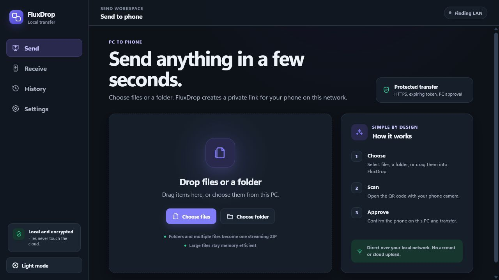

Choose what to move
Select one file, several files, or a folder. FluxDrop prepares large sets as a streaming ZIP.
FluxDrop sends files directly between your PC and phone over local Wi-Fi. Scan one QR code. No account, cloud upload, or phone app.
Free under the MIT license. NSIS and MSI installers.

Cloud drives solve storage and collaboration. They are overkill when you only need to move a file to the device beside you.
FluxDrop creates a temporary connection on your local network, then gets out of the way. No upload queue. No storage quota. No cleanup later.
FluxDrop keeps the workflow short without hiding the controls that keep it safe.
Select one file, several files, or a folder. FluxDrop prepares large sets as a streaming ZIP.
Your camera opens a local connection page. Accept the one-time certificate prompt when required.
Confirm the requesting phone on your PC. The file then travels directly over your Wi-Fi network.
FluxDrop handles both directions, keeps transfers visible, and gives temporary links a short life.
Send files and folders to your phone, or switch to Receive mode and approve an upload back to your PC.
See the phone IP, filename, and size before a transfer begins. Approve or deny from the desktop.
Choose 5, 10, 30, or 60 minutes per transfer. QR cards show live expiry so stale links are obvious.
Multiple files and nested folders become an on-the-fly ZIP with bounded memory use and sanitized paths.
Search outcomes, copy filtered summaries or CSV, repeat prior setups, or scrub saved local paths while keeping tokens, URLs, certificates, and file contents out of history.
Token-bearing pages and file data use HTTPS after you accept FluxDrop's local, self-signed certificate. Random links, expiration, rate limiting, and PC approval reduce exposure without pretending a private Wi-Fi network is a zero-trust environment.
Read the security modelDirect pathFiles travel between your devices, not through FluxDrop infrastructure.
Short-lived access160-bit random tokens stay in memory and expire automatically.
No telemetryNo analytics, cloud account, phone-home request, or automatic update check. Diagnostics copy excludes active transfer tokens.
Clear boundariesSelf-signed TLS does not stop an active attacker on a hostile network.
FluxDrop is built with Rust, Tauri, React, and TypeScript. The desktop client, local server, security model, protocol, and release process are all public.
No. The desktop app serves the transfer from your PC over the selected local network interface.
No. Your phone camera opens the transfer in a normal browser.
FluxDrop creates a self-signed certificate for your PC's local IP. Browsers cannot automatically trust it, so the first connection may require an Advanced or Proceed action.
Yes. FluxDrop streams multiple files and folder trees as a ZIP while keeping memory use bounded.
No. FluxDrop is intentionally designed for devices on the same private local network.
Download FluxDrop for Windows 10 or 11. Free, open source, and built for local transfer.